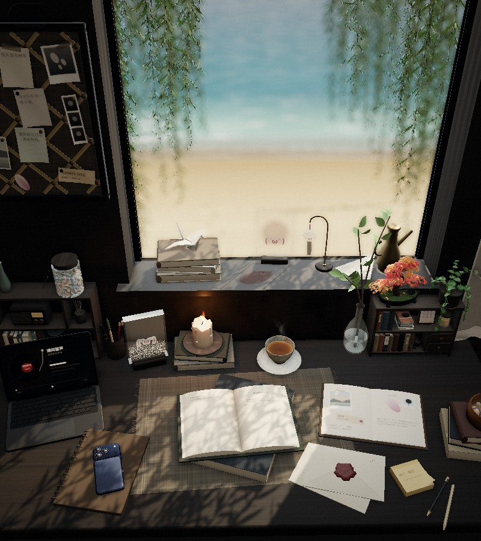

AN INTERLUDE, BY THE WINDOW / 课间实验 03
留一扇窗，给课间。
桌上的每件小事，都可以亲手打开。
写一句话，读两页书，让声音长成一株嫩芽。窗外海岸是想象场景，不是府城校区实景。

把日常，放在光里。
拖动看向窗外，轻点物件走近。
手机与电脑，都有自己的课间。
纸面工具现在就能用，不需要开启 3D。
↳ 物件即入口 便签可以改写，书可以翻页。开启 3D 后，也可以点桌上的物件找到它们。
YOUR LITTLE DESK
今天，想留下一点什么？
01 — NOTES TO SELF
树影会动，话可以留下。
每张 40 字，仅存本机。打开 3D 后，纸上的字也会一起更新。
只属于这个浏览器的小纸条。
02 — TIME, UNHURRIED
一次，只留给一件小事。
不统计效率，不计算排名。切到后台仍按实际时间计时，回到页面可查看结果。
由你按下开始，没有自动播放的铃声。
03 — DEAR FUTURE ME
给下一次打开这里的自己。
04 — LET SOUND GROW
让一段声音，长成嫩芽。
选择你自己的录音或音乐，波形随真实响度展开。不上传、不录麦克风、不自动转写。
声音只在当前页面内存中使用，离开页面即释放。
05 — TWO PAGES, FOR YOU
窗边校园小书
06 — A TINY POSSIBILITY
今天，试一件很小的新事。
原创观察提示，不是随机生成的校史或真实聊天记录。
把灵感放进共感暗房 ↗SOME THINGS ARE BETTER LEFT LOCAL
不必被看见，也值得被留下。
便签与信存在你的浏览器；声音只在当前页面内存中。没有账号、健康数据、AI 聊天或后台上传。浏览器清理数据后，本机内容也会消失。